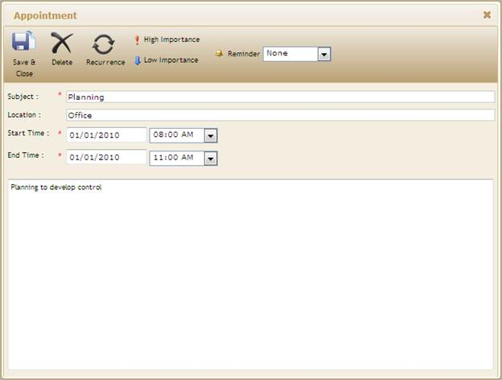

The steps to customize the changes in an existing appointment using View Customization are as follows:
1. Create a model in the application.
2. Create a strongly typed view.
3. In View, you can use its Model property in DataSource in order to bind the data source and bind your database fields into the corresponding Schedule fields.
|
View[aspx] <%=Html.Syncfusion().Schedule()("ChangeAppointment") .DataSource(Model) .Skins(ScheduleSkins.Sandune) .BindList(columns => { columns.IdField("AppId"); columns.SubjectField("Subject"); columns.LocationField("Location"); columns.StartTimeField("StartTime"); columns.EndTimeField("EndTime"); columns.DescriptionField("Descrip"); columns.OwnerField("Resource"); }) %> |
|
View[cshtml] @( Html.Syncfusion().Schedule()("ChangeAppointment") .DataSource(Model) .Skins(ScheduleSkins.Sandune) .BindList(columns => { columns.IdField("AppId"); columns.SubjectField("Subject"); columns.LocationField("Location"); columns.StartTimeField("StartTime"); columns.EndTimeField("EndTime"); columns.DescriptionField("Descrip"); columns.OwnerField("Resource"); }))
|
4. Set the AllowEdit() method to perform change in an appointment through AppointmentDoubleClick event.
|
View[aspx] <%=Html.Syncfusion().Schedule()("ChangeAppointment") .DataSource(Model) .Skins(ScheduleSkins.Sandune) .AllowEdit(true) .BindList(columns => { columns.IdField("AppId"); columns.SubjectField("Subject"); columns.LocationField("Location"); columns.StartTimeField("StartTime"); columns.EndTimeField("EndTime"); columns.DescriptionField("Descrip"); columns.OwnerField("Resource"); }) %> |
|
View[cshtml] @( Html.Syncfusion().Schedule()("ChangeAppointment") .DataSource(Model) .Skins(ScheduleSkins.Sandune) .AllowEdit(true) .BindList(columns => { columns.IdField("AppId"); columns.SubjectField("Subject"); columns.LocationField("Location"); columns.StartTimeField("StartTime"); columns.EndTimeField("EndTime"); columns.DescriptionField("Descrip"); columns.OwnerField("Resource"); }))
|
5. Add a ContextMenuItem (OpenAppointment) in the ContextMenuItems () method to perform change in an existing appointment through context-menu.
|
View[aspx] <%=Html.Syncfusion().Schedule()("ChangeAppointment") .DataSource(Model) .Skins(ScheduleSkins.Sandune) .AllowEdit(true) .ContextMenuItems((List<ContextMenuItem>)ViewData["ContextMenus"]) .BindList(columns => { columns.IdField("AppId"); columns.SubjectField("Subject"); columns.LocationField("Location"); columns.StartTimeField("StartTime"); columns.EndTimeField("EndTime"); columns.DescriptionField("Descrip"); columns.OwnerField("Resource"); }) %> |
|
View[cshtml] @( Html.Syncfusion().Schedule()("ChangeAppointment") .DataSource(Model) .Skins(ScheduleSkins.Sandune) .AllowEdit(true) .ContextMenuItems((List<ContextMenuItem>)ViewData["ContextMenus"]) .BindList(columns => { columns.IdField("AppId"); columns.SubjectField("Subject"); columns.LocationField("Location"); columns.StartTimeField("StartTime"); columns.EndTimeField("EndTime"); columns.DescriptionField("Descrip"); columns.OwnerField("Resource"); }))
|
6. In Controller, add the Syncfusion.Mvc.Schedule, Syncfusion.Mvc.Shared namespaces.
|
[Controller] using Syncfusion.Mvc.Schedule; using Syncfusion.Mvc.Shared; |
7. Create context-menu item for change in an appointment and store it in ViewData for access from viewpage. Set its data source and render the view.
|
[Controller] /// <summary> /// It is used to bind the Schedule /// </summary> /// <returns>View page, it displays the Schedule</returns> public ActionResult Index() { ContextMenuItem editApp = new ContextMenuItem() { MenuID = "UpdateAppointment", MenuName = "Update Appointment", CommandName = ContextCommandNames.OpenAppointment }; ViewData["ContextMenus"] = new List<ContextMenuItem>() { editApp }; var data = new NorthwindDataClassesDataContext().AppointmentTables.Take(200); return View(data); }
|
8. Create a post method for Index action and bind the data source to Schedule, as shown in the code displayed below.
|
[Controller] /// <summary> /// Post Requests are mapped to this method. This method invokes the HtmlActionResult /// from the Schedule. Required response is generated. /// </summary> /// <param name="args">Contains post action properties </param> /// <returns> /// HtmlActionResult which returns data displayed on the Schedule /// </returns> [AcceptVerbs(HttpVerbs.Post)] public ActionResult Index(Params args, SchedulePropertiesModel model) { NorthwindDataClassesDataContext db = new NorthwindDataClassesDataContext(); model.SetCurrentCultureInfo();
// Update existing apppointment if (args.CurrentAction == "Edit") { var filterData = db.AppointmentTables.Where(c => c.AppId == Convert.ToInt32(args.AppID)); if (filterData.Count() > 0) { DateTime startTime = Convert.ToDateTime(args.StartTime); DateTime endTime = Convert.ToDateTime(args.EndTime); AppointmentTable appoint = db.AppointmentTables.Single(A => A.AppId == Convert.ToInt32(args.AppID)); appoint.StartTime = startTime; appoint.EndTime = endTime; appoint.Subject = args.Subject; appoint.Location = args.Location; appoint.Descrip = args.Description; appoint.Resource = args.Owner; } } //to reflect in database db.SubmitChanges(); ActionResult result = db.AppointmentTables.ScheduleActions<ScheduleHtmlActionResult>(); return result; }
|
9. Run the application. The Schedule’s appointment window will appear as shown below when the following actions happen to change an appointment.
· Double-click any appointment.
· Right-click an appointment and click Open Appointment.

Figure 108: Appointment dialog with existing appointment details
10. In the Subject box, change an appointment’s subject.
11. In the Location box, change the location.
12. Change the appointment timings - start date, start time, end date and end time.
13. In the Description box, change a description.
14. On the appointment dialog toolbar, click Save & Close.